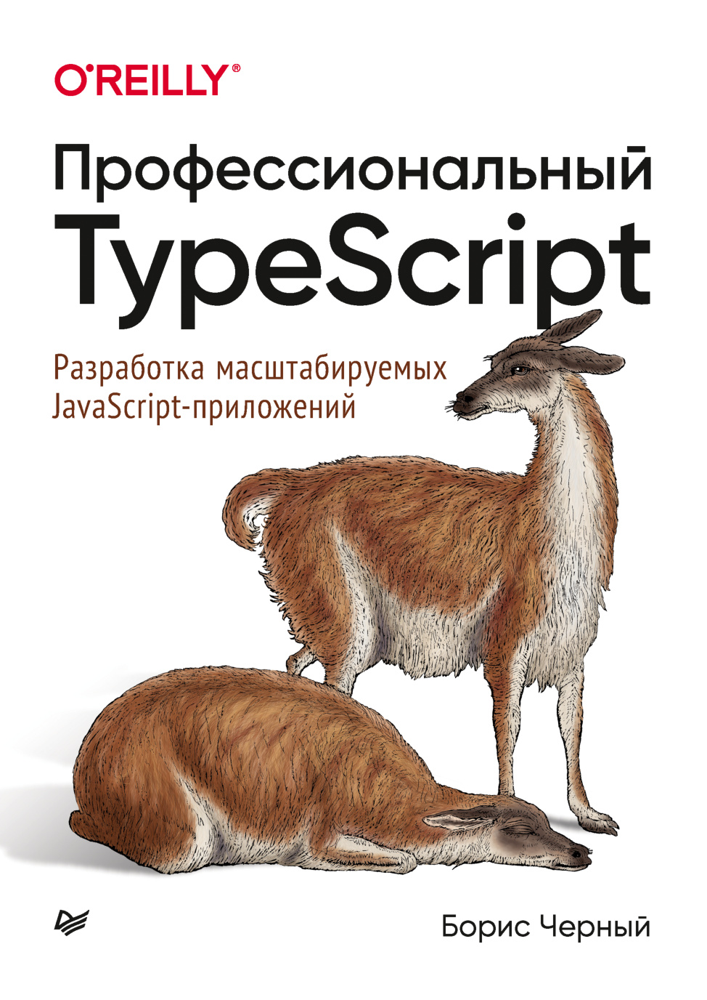

AST & Type Checker PipelineVariance: Covariant & ContravariantType-safe Concurrency with Web WorkersMonadic Error Handling with Option<T>

Интерактивная книга · Полка TypeScript
Профессиональный & TypeScript
Разработка надежных веб-приложений от Бориса Черного: полное руководство по архитектуре компилятора, полиморфизму, алгебре типов, монадической обработке ошибок и многопоточности.